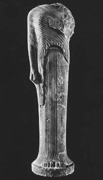
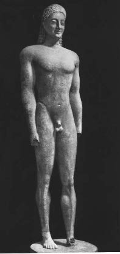
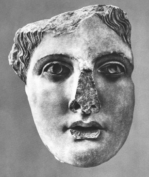
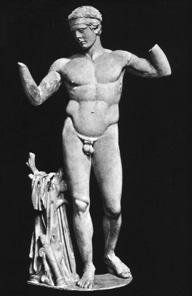
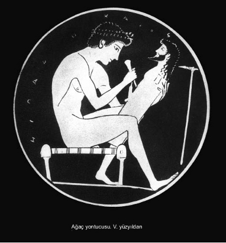

Yunanlılar şair oldukları kadar heykelcidirler de. Ama onları tanımak ve mermerden ve bronzdan bu erkek ve kadın görüntüsünü –onlar için Tanrının değişik yüzü olacak o parlak insan biçimini– çıkarmak için bu malzemelerle giriştikleri mücadelede haklarını teslim etmek; işte bu, o günden kalan gerçek belgeler olmadığından fazlasıyla güç bir iştir.
Yunan uygarlığıyla ilgili herhangi bir konuda, her türden incelemenin daha başında ne kadar bilgisiz olduğumuzu söylesek az gelir.
Roma, Londra, Paris müzeleri –tüm dünyadaki bütün antik müzeler– hem bolluk hem eksiklik bakımından şaşırtıcı sayılara varan bir heykel topluluğu ile dolar taşar. Müzeyi gezen kişi bu ünlü ve sessiz birliği teftiş eder. Kendisine bir işaret yapılmasını bekler, salonlar boyunca, bakışı hiçbir şeye takılmaz, uzun zamandan beri kayıp olan özgün bir üsluptan en ufak belirti yoktur. Bunun nedeni yalnızca, bir müzede toplanmış bu kalıntıların artık, kendilerine özgü olan site içinde tanrıyı inananlarına göstermek işlevinden kopmuş heykeller olması değildir. Ayrıca ve özellikle bu inanılmaz toplantı içinde ancak bir yan ürünler, hellenistik kopyalar ve dahası düzmecesi yapılmak üzere yirmi kez tekrarlanan yarı ölü yapıtlar yığınının bulunmasıdır. Çocukluğumuzdan beri ders kitaplarımız klasik başyapıtların acemice taklitleri konusunda hiçbir şeyin gerçek, hiçbir şeyin inandırıcı olmadığını söyleye söyleye bizi bıktırmışlardır. Olsa olsa biraz istisna vardır. Arkaik dönemin heykelleri ve silik-kabartmaları, rölyefleri onları tasarlayan kişiden daha cesur ve çok acemi bir el tarafından yontulmuşlardır. Ama, klasik dönemin sanatında (İ.Ö. V. ve IV. yüzyıl) –alınlıklarında ve tavan pervazlarındaki heykel ve kabartmalar dışında– yaratıcısının elinden çıkma, bir ustanın bir tek özgün yapıtı olarak, eşsiz Praksiteles’in (Praksitelis) Hermes’inden söz edebiliriz. Üstelik Hermes, eskilerce bize, Praksiteles üslubunun örnek yapıtlarından biri olarak gösterilmemiştir. Pheidias’ın (Fidias) klasik sanatının temsilcileri olan Parthenon’un pervaz kabartmalarına, alınlıklarındaki kabartmalara gelince, bunlardan çoğu, bir müzede kapalı olduklarından, Londra’nın sisli havası içinde soluklaşırlar. Ama Pheidias’ın yontma kalemi Olympos (Olimpos) tanrılarının, Atinalı yüksek görevlilerin, binicilerin ve genç kızların soylu ve sert biçimini mermere bu basık sisli gökyüzü için yontmuş değildir tabii ki.
Çok kısa olarak söylenirse aslında antik heykelcilik hakkında bilgimizin kaynaklarının acıklı ve düş kırıcı durumu böyledir. Şunu da eklemek gerekir ki bu bizi yanıltmaktan geri kalmaz. Antik plastik ustaların çoğu taş yontucuları değil, bronzculardı. Özellikle klasik çağın en büyük sanatçılarından üçü, İ.Ö. V. yüzyılda Myron (Miron) ile Polykleitos’u (Polikeitos), IV. yüzyılda Lysippos’u (Lisipos) sayabiliriz: Onların ellerinden çıkma hiçbir bronz bize ulaşmış değildir. Büyük müzeler çoğu zaman bize ancak mermerler ve çok az sayıda da bronz sunuyorlarsa, bunun nedeni bronzcuların asıl yapıtlarının eski çağın sonundan itibaren kaybolmuş olmasıdır. Bu durumda bu büyük sanatçıların yapıtlarını tanımak ve değerlendirmek için elimizde ancak bunların yaratıldıkları maddeden başka bir maddeden yapılmış ve geç kopyaları bulunmaktadır. Yunan uygarlığı çağını izleyen yüzyıllar boyunca, bronz başyapıtları saklamak yerine, çanlar ya da paralar, daha sonra toplar yapmak üzere bunları eritmeyi yeğlemişlerdir.
Yunan plastik sanatı hakkında (resimden hiç söz etmeyelim) bilgisizliğimizin görebildiğimizi ne kadar dar biçimde sınırladığını belirtmek için bu kısa düşünceleri sıralamamız gerekliydi. Hiçbir zaman ya da hemen hiçbir zaman özgün bir yapıt olmadı elimizde. Her zaman ya da hemen her zaman elimizde, dördüncü ya da beşinci el değilse bile, ikinci el yapıtlar bulunmaktadır.
Bununla birlikte işler ilk bakışta çok basit gibi görünür. Yunan halkı tamamıyla taşlı bir toprağın çocuklarıdır. Yunanlı sanatçıların en güzel heykel malzemesi olacak mermeri, ölümsüz tanrıların kalıcı görüntülerini yapmak üzere bu topraktan çıkarmaları doğal gibi görünür.
Ama iş hiç de böylesine basit gelişmemiştir. Henüz ilkel durumdaki Yunan halkının ilkel Yunan heykelciliği bize gerçekte neyi göstermektedir? Koca bir hiç. Niçin? Çünkü İ.Ö. IX. ya da VIII. yüzyıldan günümüze gelebilmiş hiçbir yapıt yoktur. O dönemde sanatçılar ne mermer, ne de yumuşak taş yontarlardı. Ahşabı işlerlerdi. Taşı yontmak için daha önce ahşap işçiliğinde olduğu gibi, Yunanlılara uzun bir çıraklık dönemi, kuşakların yavaş yavaş eğitilmesi, sanatçının yeniden yaratmak istediği gerçekliğe önce gitgide artan ölçüde gözünü uydurabilmesi gerekecektir. Özellikle de sanatçının yararlanacağı ilk aletin, yani elinin gelişmesi gerekiyordu.
İlkel Yunan sanatçısı ardıllarının taşa saldıracaklarını düşünmeden bir köylü gibi ahşabı işler. Taptığı korkunç tanrıların henüz kaba saba görüntülerini biçimlendirmektedir. Onlara insan biçimi vermek, onların belasından kurtulmak –bilinmeyeni bilinene döndürerek–, onları kötülükçü güçlerinden yoksun bırakmak demektir.
Ama bunda da yine sanatçıya konuyla ilgili bir eğitim gerekir. Seçtiği meslek çerçevesinde ona bu eğitimi veren, bağlı bulunduğu toplumdur. Toplumsal çevresi sanatçının tehlikeye atılmasına izin verir, onun eğilimi de tehlikelerle dolu bu işe girişmesini gerektirmektedir zaten: Sanatçı, çoğu zaman çevresinde kaba taşlara, fetişlere tapınan insanlara, tanrısal niteliği anlatmaya, hem de onu insan özellikleriyle açıklamaya kalkışır: Şiirin eskilerden bu yana haklarında bir yığın insancıl öykü aktarıp durduğu bu tanrılara, erkek ve kadın biçimi verme cesaretini gösterir. “Mitoloji, Yunan sanatının yalnız donatım ambarı değil, aynı zamanda ana rahmidir,” denmiş olması bundandır.
İ.Ö. V. yüzyılda ve hatta daha sonra, Med savaşları yangını ardından yeniden yapılan Atina tapınaklarının en eskisi Erekhteion’da ahşaptan yontulmuş (hem de çağların karanlığında) ve gökten düştüğüne inanılan antik bir Athena (Atina) putu vardı; tasvirinden ayrılan tanrıça halkının çağrısı üzerine, kimi zaman gelip orada otururdu. Tanrıçayı tapınaklarında tutan Atinalılar, onun tanrısal gücünden yararlandıklarını düşünürlerdi.
Tüm eski tapınaklarda çoğu zaman “gökten düşme” böyle ahşap tasvirler vardı. Ama insanların onlara taktıkları ad insan eli ile yapılmış olduklarını bulanık biçimde bildiklerini gösteriyordu. Bunlara xoana (ksoana) (tekili xoanon -ksoanon) deniyordu. Sözcüğün kaynağı bunların eski fetişler olan kabataşların tam tersi anlamıyla “işlenmiş parçalar” sayıldıklarını ortaya koyar. Eski bir tarihçi xoana’nın gözlerinin kapalı, kollarının göğüslerinde bağlı olduklarını söyler. Pausanias (Patsanias) zamanında (takvimimizin İ.S. II. yüzyılı) birtakım tapınaklarda bunlara hâlâ tapınılmaktaydı. Kutsaldılar, özenle korunur, beyaz ya da kızıla boyanırlardı ve kimileyin eksiksiz bir giysi takımları olurdu. Kuşkucular onlarla dalga geçer, ama sıradan insanlar onları kutlu sayarlardı.
Başlangıçtan klasik döneme kadar Yunan sanatı, gerçekte çeşitli türde engellerle dolu çok uzun bir yoldur. Başta kuşkusuz elin ve gözün uyarlanması gibi teknik engeller vardır. Ama sanatçının beynini dolduran, zamanın büyüsel inanç ve boş inançları gibi, engeller de söz konusudur. Çünkü en sonu, Michelangelo’nun dediği gibi, “İnsan el ile değil, beyin ile resim yapar; özgür beyni olmayan kişi utanca sığınır.” Sanatçı bu engellerle savaşarak yapıtını yaratır. Bunlardan birinin üstesinden geldiği zaman değerli bir yapıt gerçekleşmiş olur.
Sanatçı, canlandırmakla görevli olduğu tanrı karşısında, tanrı saygısı ile insanın ona meydan okuma cesaretinin –Yunan tragedyasını aidos (Edos) ve hybris (İvris) adını verdiği şey–, birleştikleri bir dizi çaba içine girişmiştir.
İnanç dünyasının sıkıntıları aynı zamanda onları elinin altından uzaklaştırabilecek olan yaratı için köstekler, kışkırtmalar oluşturur.
Özellikle nadir gerçek yapıtların yardımıyla, onların gösterdikleri yönleri açıklığa kavuşturmaya çalışarak biz de kısaca bu uzun yolu yeniden yürümeye girişeceğiz. Yunan sanatı başından beri son derecede gerçekçidir. Klasik akım olarak serpilir, gelişir. Ama o kadar sık saptırılan bu gerçekçilik ve klasik akım sözcüklerinin anlamı nedir? Sonraki sayfaların başlıca konusu bu olacaktır.
Xoana’dan başlayalım. Sanatçı onları yapmak için düzgün bir ağaç gövdesi almıştı. Ondan insan boyundan biraz daha büyük bir parça kesmişti. (“Tanrılar insanlardan daha uzun boyludurlar.”) Gövdenin yuvarlaklığına uyarak, iki kolu vücut boyunca yapıştıran, yere dikey olarak konulan iki bacağı giysili ya da devinimsiz kapatan, bütünde katı bir bakışım gözeten sanatçı, vücudun geri kalanını kaba saba belirtmiş ve insan yapısının başlıca eklemlerini basit bir biçimde göstermişti. Erkek tanrının vücudunda erkeklik organı açıkça belli idi. Tanrıçanın vücudunda göğüs giysinin altında tam olarak belirgindi.

Samos’ lu Hera. Arkaik heykel. 560’a doğru.
Yunanlılar daha sonra –maddeye karşı mücadele ile daha esnek ve daha diri kılınan elin çıraklık döneminin ikinci evresi– yumuşak taşa, kalkere saldırdılar. VI. yüzyılın ortalarındayız. Epik şiir şanlı koşusunu çoktan bitirmiş, ama daha unutulmamıştır: Sitelerin şölenlerinde İlyada ve Odysseia ezbere okunur. Lirizm şarkı ile birleşen şiirsel biçimin güzelliğini ele geçirmiştir. Heykelcilik henüz mırıldanmaktadır. Burada mücadele daha çetindir: Gözün, elin ve düşüncenin madde ile göğüs göğüse mücadelesidir bu.
Yunanistan’dan elimizde kalan ilk heykellerden biri olan Samos Herası’na (Louvre Müzesi) bakalım. Aşağı yukarı 560 tarihinden kalmadır. Bu yapıt elbette bir xoanon değildir. Bugüne hiç xoanon kalmamıştır. Ama bu heykel ahşap gövde üslubunu apaçık yansıtmaktadır. Bütünüyle yuvarlaktır. Heykelcinin yere kadar indirmiş olduğu birçok dikey kıvrımla yivlenmiş tünik sayesinde tabanı değirmi hal almıştır. Heykeli saran giysiler ayaklardan omuzlara kadar (baş kısmı yok olmuştur) dişilik görünümünü zar zor ele veren bir ahşap gövde oluştururlar. Vücudun alt bölümü, kumaşın altındaki bacaklar, ne olduğu konusunda en ufak ipucu vermeksizin, silindir biçiminde dikilir. Ne bel ne kalçalar bellidir. Karın bölgesi, eh şöyle böyle. Daha yukarıda giysinin altında memelerin hafif kabarıklığı fark edilmektedir. Heykelin sırt kısmı daha iyi işlenmiştir. Heykelcinin gözünde omurga belirmeye başlamıştır. Bel çöküntüsünü de görmüş ve yansıtmıştır. Buna karşılık uyluklar ve bacaklar gerek önde gerek arkada kılıfları içinde kapalı ve görünmez kalırlar.
Tam aşağıda uzun etek ucu sayı saymasını bilen Hera’ya tapınanlar için yan yana iki ayağın on parmağını açıkta bırakacak şekilde yukarı kıvırmıştır.
Bu Hera, henüz tanrısal bir yaratığın tasvirinden çok canlanıp kadın haline gelen bir kütük gibi görünür. Ama zaten tanrı “taklit” edilmez: Pür dikkat yüreğe, telkin edilir. Burada tanrıça, ağacın ancak yeşerip büyüyerek canlanış biçimini almıştır: Heykel topraktan yaşama doğru uzar. İnsan onu seyre dalınca hiç de yetersiz bulmaz bir şeyleri. Bir doğum gibi görkemlidir o. Yalnız serinkanlı eleştirmen, elin sakat gibi güçsüz görünüşüne bakıp, henüz elin, gözün gerçek cesaretine ulaşmamış olduğunu söyleyecektir. Haksız da değildir.
Yapılan kazılar, rastlantı sonucu bize İ.Ö. VI. yüzyılda yapılmış oldukça çok sayıda özgün heykel sağladı. Bunları yaratan kişiler antik dönemin son yüzyıllarında, İskenderiyeliler ve Romalıların, bu klasik döneme ait ünlü yapıtları, sahtesini yaparak yağmaladıkları ya da çoğalttıkları zamanlardaki kadar rağbet görmediler ne yazık ki. Bu arkaik heykeller heykel sanatının “büyük adlar”ından biri tarafından imzalanmış değillerdir. Onların ünlü olmayışları bizim için şans olmuştur doğrusu.
Bununla birlikte, genel olarak, kendi elleriyle yarattıkları delikanlı ya da kızın (tanrı ya da tanrıça) bulundukları yerin adıyla andığımız bu adı belirsiz ustalar, zamanlarında en az Pheidias’lar ya da Praksiteles’ler kadar büyüktürler. Kimi girişimlerini gerçekleştirmek için inanılmaz güçlüklerle karşılaştılar. Öncellerinin gösterdikleri uzun çabalara dayanarak bu güçlükleri yendiler. Sanatsal yaratımın ortak niteliği burada açıkça görülmektedir. Ama onlar bu çabalara her seferinde yeni bir çaba eklemişler; bunu yaparken kendi dehalarını parlak bir biçimde sergilemişlerdir. Arkaik sanatı, klasik sanatın “hazırlanma” safhası haline sokan o yanlış tarihsel bakış açısına yerleştirilen yapıtları, henüz çekingen ve acemice gözükebilir. Ama, kendi başlarına ve her biri kendi özgünlüğü içinde ele alındıklarında, bunların çok cesur, yalnız ilgi çekici değil, aynı zamanda baş döndürücü oldukları ortaya çıkar. Özümledikleri gelenek payı, kazanımlarının yeniliğini kuvvetle belirtmelerini hiçbir biçimde engellemez. Çünkü bu kazanım sadece kendilerinin kazanımı değildir: Bu aynı zamanda, tanrılarını biçimlendirirken, kendinin ve gücünün en açık bilincine erişen bir halkın kazanımıdır.
Arkaik Yunan sanatı hemen yalnızca iki temel tipe sarılır. Daha fazla değil, iki: Biri çıplak delikanlı (kuros), öteki giyinik genç kız (kore).
Bu çıplak delikanlı öncelikle gençliğinin zirvesinde bir tanrıdır. Arkeologlar bunlardan çoğuna Apollon adını koydular. Onlara Hermes de diyebilirdik. Ya da hatta genç Zeus’lar. Bu kuros heykelleri yarış kazanan atletlerin görüntüleri de olabilirler. Güzellikte, sporla biçimlenmiş erkek ile Olympos sakinleri arasındaki mesafe büyük değildir. Gökyüzü yeryüzü görünümündedir. Homeros’un kahramanları “tanrılara benzer” diye nitelemesi, yalnızca eksiksiz kahramanları onurlandırmakla kalmaz, Olympia (Olimpia), Delphoi (Delfi) ya da başka yerde adına büyük ulusal oyunlar düzenlenen tanrıları da onurlandırır. Vaktiyle, stadların pistlerinde, bunlardan kimilerinin ete kemiğe bürünüp koştukları görülmemiş midir? Tanrıların, beden eğitimi çalışmalarıyla vücut güzelliği biçimlenmiş delikanlıların tasviriyle tasarlanmaları doğaldır.
Yunan heykelci, bu Kuros tipine bakarak insan anatomisini öğrenir. Jimnastik okullarında erkek gençler neredeyse çıplaktırlar: Oraya gidip bakmak yeter. Burada, gelenekte doğan heykel sanatının hızlı gelişiminin temel nedenlerinden birini ve de onun gerçekçi özelliğinin temel nedenlerinden birini görüyoruz. Bir tapınakta dikilmiş bir Kuros heykeline bakan herkes bilir; çünkü, yarışta koşan şampiyonun vücudundaki tüm kasların nasıl oynadığını görmüştür.

Arkaik Kuros. V. yüzyılın ortası.
Doğrusu yine de heykeltraş İ.Ö. VI. yüzyılda bu kas çalışmasını doğru algılamaktan henüz uzaktır. O kasların ABC’sini ancak yavaş yavaş öğrenir. Vücudu hareket halinde canlandırmaya bile cesaret edemez kayasında. Sağa ya da sola bir hareket yoktur henüz. Başın bir eğilişi yoktur. Anatomi, söylemek gerekirse, henüz çok ilkeldir. Yüz birkaç tuhaf çizgiyle belirtilir. Gözler, ağır gözkapakları arasında fırlamaya hazır, hafifçe çıkıntılıdırlar. Tek başına alındığında bu göz acayip bir şeydir. Bakış sanki dikkat etmeye çabaladığından uzamış gibidir. Peki bu gözü ağızdaki gülücük ile nasıl bağdaştırmalı? Öte yandan bu gülücüğe ne demeli? Antik sanat tarihçileri bunları uzun uzadıya tartıştılar. Kimilerine göre, arkaik gülümseme basit bir teknik beceriksizliktir, o kadar. Dediklerine göre, gülümseyen ağzı canlandırmak, devinimsiz ağzı çalışmaktan daha kolaydır. Bunlara kim inanır? Kimilerine göre ise bu gülümseme “koruyucu”dur, insana iyi gelir: Kötü ruhları kovmak, felaketi savmak için gereklidir. Heykel bir tanrıyı temsil ettiğine göre, Homeros’un “önlenemez gülüş”e bağladığı bu tanrıları neşe içinde göstermenin doğal göründüğünü düşünmek çok daha gerçekçi değil midir? Arkaik heykellerdeki gülümseme mutlu tanrıların ayrıcalığı olan sonsuza dek mutlu yaşama sevincinin bir yansımasıdır.
Kuros heykellerinde bel ne kadar inceyse omuzlar da o kadar güçlü; kalçalar fırlak olacak kadar sıkıdır. Karın düzdür: Sanatçı tarafından pek bilinmeyen bir bölge –kaygan yüzey ve göbek noktasında bir çukurluk. Göğsün tüm kaslarının yerini çok fırlak iki göğüs kası tutmaktadır. Buna karşılık kasık kıvrımları kesin olarak belirgindir.
Kollar gövdeye boylu boyunca yaslanmış gibi düşey dururlar. Yumulmuş yumruklar uylukların başladığı yerde vücutla birleşirler. Dinlenme halinde enerji sakınımı.
Bacaklara gelince, onların ikisi birden vücudun ağırlığını taşımaktadır. Heykel yürümez. Ama bacaklardan biri öbürüne göre biraz öndedir. Genellikle sol bacak. Burada Yunan heykelciliği üzerinde Mısır heykelciliğinin etkisinin bir göstergesi vardır. Mısır sanatında sol bacak ayin usulü gereği öndedir. Yunan ülkesinde bu duruşu haklı gösterecek böyle gerekçeler görülmez. Zaten iki bacaktan birinin önde bulunuşu bütün vücudun kesin bakışımı içinde hiçbir denge değişikliği göstermez.
İnsan Kuros’a dikkatle baktıkça onun sahip olduğu güce şaşıp kalır. Sağlam bacaklar, gerinen ve omuzların gürbüz duvarını desteklemek üzere açılan sıkı vücut. Bu duvarın üstünde baş neşeyle güler, kendi gücüyle güler. Çekicilikten hiç de yoksun olmayan bir güçtür bu. Kimi Kuros heykelleri korku vermekle kalmayıp, düşlere daldırırlar insanı. Kaslarına verilen biçimin işlenmesinde şehvete yönelik bir tatlılık vardır.

Altın ve fildişi bir heykel başının mermer kopyası.
Yine de güç ve çekicilik, tüm bunlar elde edilmiş bir gerçeklikten çok bir vaat gibidir; çünkü bu vücut hareketsizdir, çünkü çalımsız heykel yürümez.
Gerçekten de arkaik sanat, uzmanların düşeysellik dedikleri bir kurala uyar; bu kural tümüyle Mısır sanatına dayanır, Yunanlılar bu kuraldan ancak 500 yılına doğru kurtulacaklardır.
Vücudu; başın tepesi, burun kökü, boynun başlangıcı, göbek noktası ve leğen kemiği ortasında kamıştan geçecek düşey bir plana göre iki parçaya ayırın. Bu iki vücut yarısı, sol bacak dışında, kesinlikle bakışımlı (simetrik) iki parçadır. Şunu tekrar belirtelim: Sol bacağın biraz önde durması vücudun kasları üzerinde hiçbir etkiye yol açmaz. Öyleyse sol bacak yürüyüş işareti gösterir ama vücut onu izlemez. Gerçekten de yürüyüş kalçaların, dizlerin, omuzların bakışımını yok edecekti. Tüm vücut insanı hapis tutan hareketsizliğinin ağı içine alınmış gibi kalır. Yürümek ister ama kımıldamaz. Burada sadece büyük bir teknik güçlük mü vardır? Taşı ya da tuncu sanki canlı maddeymiş gibi nasıl yürütmeli? Ama bu teknik güçlük yalnızca bir başka engelin –dinsel türden bir engelin– yansıması olabilir mi? Heykeltraş canlandırmaya kalkıştığı bu tanrıyı yürütmeye cesaret etmez. Tanrı ona katlanmaktan çok ilke edindiği bu hareketsizlik içinde daha tanrısal görünür. Tanrıyı harekete geçirme cesareti nasıl gösterilir? Ona yürüme komutu vermek, onun yüce özgürlüğüne kastetmek demektir. Demek oluyor ki hareketi betimlemeye ilişkin teknik güçlüğün kökeni, sanatçının maddeden çekip çıkardığı bu tanrıya duyduğu derin saygısında bulunmaktadır.
Bu güçlük, klasik sanatın eşiğinde ancak Myron’un dehasıyla aşılacaktır.
Zaten, heykeltraş Kuros-tanrı karşısında içimizi onun gücüne ilişkin duyguyla doldurmasını bildikçe yürüyüşün bu eksikliğini bir eksiklik olarak hissetmeyiz. Her şeyden önce onda enerji ile dopdolu tanrıyı hissederiz, onun vaatle yüklü, içinde taşıdığı ve doğuracağı o geleceğe karşı, tam olarak hazır olduğunu hissederiz. Önceden kestirilemez biçimde, çünkü o tanrıdır.
Arkaik çağda Kuros tipine Kore (Korea) tipi karşılık verir. Çıplak delikanlı, örtünmüş genç kız. Korkunç ve gülen, atlet-tanrı, canlı renklerle boyanmış, doğunun büyülü renkleriyle alacalanmış genç kız ya da tanrıça. Med savaşlarından az önce Asya’dan gelip Atina Akropolis’ine dikilen bu heykellerden on dört tanesine yeniden kavuştuk. 480 yılında (Salamis yılı) Barbarlarca yıkılan bu heykeller yurtlarına dönen Atinalılar tarafından dindarca gömülmüşlerdir: Ortak mezarlarında birbirine sarılmış bu heykeller suru destekleyen dolgu işi görüyorlardı. Saçlar ve güzel giysiler üstüne rastlantıyla atılmış gibi görünen kırmızı, aşıboyası ve mavi renkler hâlâ taptaze ve hoştu. Çünkü sanatçı için heykeli yaşayan bir kişiye benzetmek değil de daha çok taşı eşsiz renk zevki ile süslemek söz konusuydu. Bu densiz kızcağızlar, Yunanlıların heykellerini boyayacak kadar zevksiz olamayacaklarını söyleyen ve bir sanatın duruluğunu yalnız ve yalnız mermerin beyazlığının o bakışsız donuk gözlerle dile getirebildiğini savunan akademisyenleri yalanlamış oldular; gerçekte mermer, duru berrak olmaktan çok, bakir ve iç açıcı olmuştur.
Henüz topraktan çıkarılan bu heykellerin bize söyleyecek çok şeyleri vardır. Tüm sanatların baş döndürücü bir bolluk içinde vakti gelip çatınca, aynı anda patladıkları Yunanistan’ın Doğusu’nda yer alan İonia’da doğdu Kore’ler. Dışardan getirilen ya da serbestçe taklit edilen, sonra da ağırbaşlı Attika’da titizlikle süslenen bu heykeller toprak rengi ya da mora çalan saç örgülerini, her renkte mücevherlerini, düzensiz kıvrımları olan ve topuklara kadar düzensiz plilerle inen ince keten tüniklerini, kimileyin de hepsi hoşluk ve umulmadık değişik renklerle boyalı kaba yünden şallarını Akropolis’e yerleştirdiler. Bu iki kat giysi altında vücut belirmeye başlar. Ama Attikalı heykeltraş, delikanlıların vücut kaslarını, kadın vücudunun hem daha yumuşak hem de daha geniş olan biçimlerinden daha iyi tanımaktadır. Bu İonia’lı kızlar da tıpkı erkekler gibi dururlar: Öne atılmış bacakları yürümeye hazırdır. Kalçaları erkek arkadaşlarınınkiler kadar dardır. Çok ayrık memeleri ile heykellere göre eşit değilmiş gibi görünen göğüsleri özellikle kumaşın umulmadık sonuçlar ortaya çıkarmasına olanak verir. Omuzlara gelince, bunlar bir jimnastikçinin geniş omuzlarıdır sanki! Aslında Kore heykelleri, sanki tiyatrodaki maskeli delikanlılar gibidirler; bu dipdiri yeniyetmeler sanki birazdan orada Antigone veya İphigeneia’yı oynayacaklardır. Kore’lerin çok neşeli bir mizaçları vardır: Arkaik denilen ve burada ince bir alayla, hafif, muzip, hoşnut bir sırıtış demek olan gülümseyişlerini sergilemekten geri kalmazlar. Giysileri, saç tuvaletleri, yani tümüyle süsler, onları son derece hoşnut eder. Yüzlerindeki bu kadın gülümsemesinin dile getirdiği şey budur. Aralarından biri dikkati kendine çekmek üzere dudak büker: Surat asar bazısı.
Bu heykeller bize sanatçıların sabır okulunu, daha doğrusu onların coşkulu yarışlarını da hatırlatırlar. Birbirine benzer iki Kore bulamazsınız. Her sanatçı bu tipe başka hoş uyumsuzluklar sokar. Giysi modelleri birbirine karışır: Bazen bir Kore, bir İonia tüniği üzerine, bol kıvrımı ile dikişsiz dikdörtgen şeklinde büyük bir yünlü kumaş sarınır; giysi olması için belin çevresinde bir kuşak sarmak ve omuzlarında iki iğne ile tutturmak yeterli olacaktır; bazen de tüniksiz, uzun bir hırka ayaklara kadar iner, bazen tüniklerde artık fazla kırma görülmez ve aldırmadan bedenine iyice yapışır kumaş. İnsan onları Akropolis müzesinde bir arada görünce, bir defileye hazırlanan, ama sergilenecek giysileri biraz rasgele seçilmiş bir grup manken sanır.
Ama raslantı değildir, seçimi sanatçı yapmıştır. Ona göre önemli olan Kore tipi bir heykelde insan anatomisinin çalışılmasından daha çok, kumaşın karmaşık drapelerinin çalışılmasıdır. Tuvaletin stili, giysinin örttüğü vücut bölümüne göre değiştiği gibi, giysinin kıvrımları da kumaşın cinsine göre alabildiğince değişir; giysinin rolü vücudun bir bölümünü örter gibi yaparken, içindeki bedenin ne biçimde olduğunu düşündürtmektir. Yunan heykel sanatında giysi, onu erkek giymiş ise güzel, kadın giymemiş ise harika bir güzellik aracıdır: Yunan sanatçısı daha sonra eşsiz bir ustalıkla bundan yararlanmayı bilecektir. Kore üzerinde bizi eğlendirerek, kuşkusuz kendi de eğlenerek bunun yeni çeşitlemelerini yapar sanatçı.
Yunan giysisinin çoğu zaman bizimki gibi dikilmediğini hatırlatalım. Kolların bindirildiği tünikler bunun dışındadır: Yine de bu kollar çok geniş ve içinde eller, bilekler çok rahat biçimde devingendir. Bizim dikilen ve vücuda uydurulan modern giysimiz dayanak noktasını omuzlarda, kalçalarda bulur. Yunan stili giysi vücuda uydurulmuş değildir, sarmalayan, bürüyen bir giysidir. Böyle bir giysi ile vücuda uyumlu bir biçim –yüzlerce biçim– vermek, fistanı ve hırkayı omuza ve göğüse sarmalatmak, bunları bacaklara düşürmek, bir kemerle kabarık tutmak, her yönde kırmalarla düzenlemek çok büyük güçlükler çıkarır! Bir organın ya da vücudun en ufak hareketi kıvrımların yönünü değiştirecektir. Ama Kore heykelcisi bu engellere, yaratıcı bir buluşun kıyısında olduğu duygusuyla neşe ile yaklaşır.
Böylece, İ.Ö. VI. yüzyılın heykeltraşları ağır ağır ortak bir yürüyüşle ister bedende kas düzeni ile çıplak, ister hafif ya da ağır giysiler altında gizlenen, ama fistan içinde kadın bedeninin çekici varlığını belirten ya da sevdiren biçimde olsun, insan bedeninin bilgisi demek olan bir büyük kazanıma kavuşmaya yönelirler.
Heykeldekinin tersine, teni içinde canlı olan insan bedeninin, gitgide kesin şeklini alacak türde anlatım bulması çok önemlidir. Heykel sanatı bu insan vücudunu, hiç gevşemeyen bir istekle aradığı oranda, onu tanrılar katına yükseltmek ister.
Erkek ve kadın bedeni gerçekten de tanrıların en iyi tasviri, en doğru görüntüsüdür. Yunan sanatçısı bu tür görüntüler yontarak halkının tanrılarını canlandırır.
Yunan heykeltraşları; şairler ve doğa yasalarından bazılarını biçimlendirmeye çalışan bilim adamları ile aynı doğrultuda ilerlemektedirler. Onlar da tanrıları yontarken dünyayı açıklamış oluyorlar.
Peki nedir bu açıklama? Tanrıları insan aracılığıyla açıklamadır bu. Gerçekten hiçbir biçim dünyada görünmez ve yadsınmaz tanrısal varlığı, erkek ve kadın bedeninden daha doğru olarak vermez. Yunanlılar Mısır’ın ve Asur’un heykellerini görüyorlardı. Ama onlar gibi yapıp tanrıyı inek başlı bir kadın, çakal başlı bir erkek olarak anlatmayı hiçbir zaman düşünmediler. Efsane kimi dil biçimlerini, kimi öyküleri ve kişilikleri (Aiskhylos’un tragedyasında, sığırsineği tarafından kemirilen düve, İo) Mısır’dan alabilir. Heykelcinin yontma kalemi, örneğin, Parthenon’un metopelerinde[1] Barbarların azgın saldırısını temsil eden Kentaur’lar gibi, doğal güçlere çok yakın varlıklar dışında, bu canavar yüzlerini çok çabuk uzaklaştırır sanatından.
Tanrı şu yalın ve çıplak delikanlıdır, tanrıça ise bir güzel süslenmiş, şu sevimli yüzlü genç kızdır.
(Kore heykellerinin tanrıçayı değil de, tanrıçaya tapan kadınları temsil ettikleri yolundaki açıklamaya takılıp kalmıyoruz. Akropolis’dekilerin genellikle orant’lar yani duacı kadınlar oldukları söylenir. Olabilir, ama onlar bu yüzden daha az kutsal, daha az tanrısallık ruhu ile dolu değildirler. Bu yüzden tanrıçadırlar.)
Kural şudur: Tanrıya en güzeli vermek. Dünyada bir delikanlının çıplaklığından ya da işlemeli kumaşlar giyinmiş bir genç kızın çekiciliğinden daha güzel ne vardır? İnsanların tanrılara sundukları işte budur, onlar tanrıları böyle görürler. Onlar böyle tanrılardır. Onları anlatmak için bu boyalı mermerlerden başka dil yoktur. (Kuros gibi Kore heykellerin de saçlarında, gözlerinde, dudaklarında bazı renk lekeleri vardı.) Daha uygun dil yoktur, daha doğru anlatım yoktur. Kuros heykeli sanki mermerden sözcüktür, ama tanrıyı anlatan gerçek bir sözcük.
Kusursuz uyumları, daha sonraki zamanlarda sanatçıların sayılarla anlatmaya kalkışacakları öylesine düzenli oranları ile, sert hatların sertliği, yumuşak hatların tatlılığı şu insan bedeninin öylesine, titrek bir katılıkta insana coşku ve güç veren hem bedenimizi hem ruhumuzu kendine inandıran ve Yunanlıların pırıl pırıl bir delikanlı gibi tasvir ettiği bu beden, bizlere ölümsüzmüş gibi gözükür. İşte insanın ölümsüz tanrılara sunması gereken en güzel şey budur. İnsanoğlu yaşamının her günü, tanrıların, gözle görülmez tanrıların oturduğu göğe, gün ışığı altında, etten kemikten, şen şakrak kız ve oğlanlarıyla bu toprağın insanlarını yükselterek sunmuştur.
Ama bu tanrılar yalnızca tek tek heykeltraşların yapıtları değildirler, çoğu zaman da bunları yapan kişi bilinmez; bunlar sitenin tanrılarıdır, onlara paye veren, heykeltraşa ısmarlayan yurttaşlar topluluğunun tanrılarıdır. Hatta bazen yalnızca sitenin tanrıları değil, Delphoi’da Olympia’da, başka yerlerde olduğu gibi, tüm Hellen toplumunun koruyucu tanrılarıdır.
Heykel sanatı herkese açıktır, halka seslendiği için popülerdir, bütün Yunanlılar arasında ortak özellikleri olduğu için ulusaldır. Bu sanat, heykeltraşın tanrılar hakkında sahip olduğu görüşü değil, bir özgür insanlar toplumunun onlar hakkında tasarladığı görüntüyü dile getirir. Bu tanrı-insan, bu tanrı değerinde insan, bu takıp takıştırmış genç kadın, bu duacı kadın –tanrıça, şu kadın olarak betimlenen tanrıça– sitelerin hem hakim hem yandaş olarak gördükleri tüm bu anlaşılmaz göksel varlıklar, insancıl ile tanrısalın bu bütünsel kaynaşması Yunanistan toprağında boy verecek en cesur girişimlerden biridir. Hiçbir yerde tanrısal olan insancıl özelliklere bu kadar yakın olmamıştır: Biri ötekisi aracılığıyla anlatılır daima. İnsan tanrısalı başka nasıl açıklayabilirdi ki! Ve insanlar tanrıyı ne diye kendi ölümlü biçimlerinin güzelliğinden yoksun etmeye kalkışsınlar? İnsanlar, tanrıyı böyle kusursuz biçimde dile getirecek yeterlikte olmadan çok öncelerde bile ona bu ölümsüz güzelliği mal etmişlerdir.
İnsanın tanrısına karşı duyduğu sevgisi ile kendi bedeni için gösterdiği sevgi, işte taş heykelcisinin yaratımının çifte dürtüsü budur.
Gerçeğe duyulan derin sevgiyi de buna ekleyelim. Heykeltraşın kemik çatımız ve kas yapımız hakkında sahip olduğu her seferinde daha bir doğruluk kazanan bilgisi. Bunları canlandırırken yararlandığı giderek artan kesinlik. Kısacası, heykeltraşın işinde tanrıya borçlu olduğu ilerlemenin karşılığında onun ilk bağışı, tanrısına yaptığı armağandır.
Peki ama bu insan-tanrıya ilk hareketi sonunda kim sağlayacaktır? Onu kim yürütecek, dopdolu o enerjiyi kim salıverecektir?
Yunan sanatının açıklamalı bir tarihi olmak gibi bir sav taşımayan, heykelde hareketin yavaş yavaş doğuşunu evrimi içinde adım adım izlemek gibi bir amacı olmayan, Yunan heykelciliği hakkındaki bu kısa bölümde bu konu ele alınamaz. Bununla birlikte ya elimizde bunu kavramamıza elverecek belgeler yoktur ya da bu evrim henüz çok yeni bir olgudur ve sanat, bazen doğada olduğu gibi burada, birkaç cılız denemeden sonra, ani bir değişimi harekete geçirir.
Myron’un Disk Atan Atlet’ine bakalım: Yaklaşık İ.Ö. V. yüzyılın ortalarından (450 yılından biraz önce) kalmadır. Bu konuda öncelikle bir tanrının değil de bir insan heykelinin söz konusu olduğuna dikkati çekmek doğru olur. Kendini heykele hareket verebilecek durumda hisseden heykeltraş hareketin doruğunu bir tanrıda değil, insani bir varlıkta –bir atlette– canlandırmayı seçmiştir. Tanrı heykellerde şimdilik hareketsizliğe mahkûmdur. Sanatçının saygısı bunu gerektirmektedir.
Öte yandan, heykeli çözümlemeye geçmeden bu ünlü ve ilkçağdan beri yüz kez kopyalanan yapıttan elimizde aslının bulunmadığını belirtelim. Müzelerdeki yapıtlar yalnızca orası burası kırık mermerlerdir. Bu az çok güvenilir kopyalardan, modern heykelciler, Roma’da, Thermes müzesinde bulunan bronz bir yeniden yapım (Myron’un asıl heykeli bronzdu) çıkardılar. Doğal olarak bu ancak Myron’un sanatı hakkında şöyle ufak bir fikir verir.
Bununla birlikte, düşeysellik kuralının hemen hemen tartışmasız hâlâ hüküm sürdüğü dönemde yetişen bu sanatçı elbette son derece cesur bir girişimi tasarlamıştır. Kuşkusuz Myron’dan önce alçak kabartmalarda, bazı bronz heykelciklerde, ender olarak heykellerde düşeysellik kuralı biraz sarsılmıştı. Ama bu kural bozumu kısmi kalıyordu. Örneğin Dana Taşıyan Adam’da kollar vücuda yapışık olmayı bırakıp, harekete geçmişti, kol kasları da omuzlara yerleşik dananın ayaklarını sıkı bir biçimde sıkıştırıyorlardı. Ama vücudun geri kalan bölümü tamamen uyuşuk ve taşıdığı yükün ağırlığına aldırış etmiyormuş gibi duruyordu. Disk Atan Atlet’de ise tersine, atletin vücudu onu ele veren bir hareketle tamamen bükülmüştür; ve aynı hareket değişkenlik içinde şiddetle gerilen bu insana sağlam bir dayanak sağlamak üzere yere yapışan sol ayağın parmaklarından başlayıp, geriye savrulmuş, ama daha sonra öndeki ağırlığını atmak üzere hemen gevşeyecek olan sağ kola –diski tutan kol– ve hatta durgun görünmekle birlikte, yine de eylem içinde sürüklenen sol kola, sağ bacağa kadar bir uçtan ötekine, ışın yayınımı ivmesiyle akar. Bu eylem artık tüm varlığı bağlar ve atleti hareket olmayan her şeyin karşı ağırlık olduğu bir oynaklığa yerleştirmiş gibi görünür: Kişinin bir ağın görünmez düğümlerine yakalandığı bu zıt kitleler dengesi olmasaydı Disk Atan Atlet düşerdi.
Myron Disk Atan Atlet ile bizleri, hareketin birden her şeye egemen olduğu, insanın, dengenin içerdiği bir güç sarhoşluğu ile karşı karşıya kaldığı bir eylem dünyasına götürür. Bu bakımdan, çağdaşı Aiskhylos nasıl dramatik olayın yaratıcısı ise, Myron da heykel sanatının kurucusudur. İkisi de insan gücünün sınırlarını keşfederler. Daha önce de dediğim gibi, heykeltraş harekette denge kurallarını gözetmeseydi, atletin diski elinden çıkarır çıkarmaz herhalde sporcunun jimnastik salonunun zeminine düşeceği gibi, heykel de düşerdi.
Demek oluyor ki Disk Atan Atlet bize hareketi sunuyor. Ama biz burada bir fotoğraf enstantanesi karşısında mıyız? Bazen, sanıyorum, haksız yere bu şekilde savunuldu. Bir enstantane söz konusu olsaydı biz bu hareketin ne olduğunu anlamazdık. Gözümüz bir fotoğraf makinesi objektifi değildir. Aslında, Disk Atan Atlet bize art arda gelen bir düzenlenmiş hareketler bileşimi sunar. Bir geçit töreni yürüyüşünü saptamak iddiasıyla bize ancak öne fırlatılmış havada hareketsiz duran bacaklarıyla bayları gösteren bir fotoğraf gibi, bir şey fırlatan bir insanı duyarlı bir plaka üstünde eylemiyle dondurmak hiçbir biçimde söz konusu değildir. Bir heykelde –tanımı gereği cansız maddeden yapılmış– canlı bir varlığın hareketi ancak zaman içinde birbirini izleyen anlar bileşimi ile saptanabilir.
Harekete hakim olan, zamana da hakim olur.
Arkaik Apollonlar adeta zamanın dışında iki bacakları üstüne konulmuşlardı: Sonsuza kadar böyle kalabilirlerdi. Disk Atan Atlet söylemek gerekirse, anlık bir hareketin görüntüsü gibidir. Bronz heykelin birbirine dayalı bütün planlarından her biri aslında bunların hepsini beraberinde götüren eylemin farklı bir anından alınmışlardır. Myron’un gözü bunu böyle gördüğü gibi, antik stad seyircisinin gözü de böyle görmüştür. Myron’un gerçekçiliğine, heykeltraşın gözlenen gerçekliği bir sanat yapıtına aktarması anlamında, zaten daha o zaman klasisizm denebilir. Bu yapıt yalnız anlık anlatım değil, bireyin elinden gelebileni ve, denebilirse, onun oluşumunu açıklamakla görevlidir.
Daha, Disk Atan Atlet’in oluş aşamasında bile, kemik çatısı ve kasların çalışmasının doğru bilgisine dayanan heykeltraşın gerçekçiliğinin yine de gerçekliğin tam bir kopyası olmadığını görebiliriz. Nesne, üretilmeden önce, yaratıcı tarafından tekrar tekrar düşünülmüştür.
Ayrıca, heykel figürünün gerçekliği yöneten kurallara uygun olmayan kurallara göre yalınlaştırılmış, stilize edilmiş olması bize onun şimdiden bir klasik birliğe (bir kural’a) uymaya hazır olduğunu haber verir.
Heykelde gerçekçilik açıkçası, heykeltraşın canlandırmak istediği vücudun, nesnel gerçeklik olarak bilinmesidir. Yunan heykel sanatı bu bilgiye yönelir ve tüm VI. yüzyıl boyunca onu elde eder. O dönemde bu sanatın belirgin niteliği olan kaslara ilişkin eksiklikler tarafımızdan pek eksiklik gibi değil de daha çok yalınlaştırma gibi görülmüştür. Heykeltraşın insana ve gerçekliğe duyduğu sevgi, tüm açığı kapatacak bir güce boğar, ortaya çıkan yapıtı.
Heykelcinin aradığı bilginin pek nadir olarak bireyi tanımak olduğunu belirtelim: O ancak istisna olarak portreyi amaç edinir kendine.
İ.Ö. V. yüzyılın, özellikle de bu yüzyılın ikinci yarısında heykelcilik bu tutkulu gerçekçilik içinde –bireysel olmaktan çok tipik ve toplumsal model içinde– kuvvetle kök salar: Klasisizm ona güçlü ve dirimsellik veren bir özsu gibi, arkaik dönem gerçekçiliği ile beslenir.
Bununla birlikte, bu gerçek insan bilgisi –başta kasların ve onlara destek olan kemik çatısının, bir süre sonra da vücut biçimlerini belirten giysinin bilgisi– edinildikçe, yurttaşlara tanrı ya da tanrıça olarak, atlet olarak sunulan bu insan, nesnel olarak iyice bilinince değiştirilebilir de, öyle fazla belirsizce denildiği gibi “idealize” edilmeden görünümü değiştirebilir ve bir anlamda, yurttaşlar topluluğuna onu gereken erdemlerle donatan bir model önermek amacıyla, düzeltilebilir. Heykelci gözlediği nesnel gerçeklik içinde seçme yapabildiğini ve seçmesi gerektiğini anladığı andan itibaren klasisizmin yoluna girmiş demektir. Klasik bir sanatçıdır artık.
Demek oluyor ki sanatçı, özellikleri, biçimleri ve davranışları seçer; daha sonra bunları birleştirme yoluna gider. Doğal bir gerçekçiliğe dayanan bu seçim, diyebiliriz ki şimdiden klasisizmdir. Ama hangi ölçüte göre yapılır bu seçim? Kuşkusuz güzelliğe göre. Cevap fazla belirsiz ve çok yetersiz. Bu konuda sanatçının uyacağı bir altın kural’dan söz edilmiştir. Bu altın kural ağaç yapraklarının ölçü ve biçimlerinde olduğu gibi insanın vücudunun ölçülerinde de kendini gösterecek doğanın nesnel bir yasası olacaktır; çünkü insan da doğanın bir parçasıdır. Bu düşünce yanlış değil: Denildiğine göre, böylesi bir yaklaşım hem Yunan klasisizmini hem de ondan 2500 yıl önceki Çin klasisizmini açıklayacaktır. Bununla birlikte, insanın en uyumlu ölçülerini bir yasa ile, klasisizmin yeni baştan bulup çıkaracağı bir yasa ile saptayarak doğanın kişileştirilmesine gidilmesine çok karşı olduğumu söylemem gerek: Bu bana güzel bir hayal, ama aşırı bir gizemciliği ortaya çıkarmak gibi görünmektedir. Eğer diyorlar, insan doğanın kendisi için saptadığı ölçülere sahipse uyumludur, klasik bakış açısıyla güzel sayılır.
Bu yasayı toplumun gereksinimlerinden (ve bu gereksinimlere cevap veren zevklerden) çıkarmak daha doğru değil midir? Yunanistan’dan söz ederken, klasik önemde güzelliğin, halkın yaşamı ve yaşamdan üstün iyilikler için verdiği gündelik mücadeleden ayrılamayacağını göstermekle daha açık ve eşyanın doğasına daha sadık olmaz mıyız? Böyle bir mücadelenin güçlü ve yürekli insanlara gereksinimi vardır. Başka bir deyişle Yunan sanatçısı toplumda çoktan çürümeye yüz tutan şeyle, hayatta kalmak için yapılanlar arasında seçim yapar; yaşam yönünde yükselen şeyi seçer. Onun gerçekçiliği yapıcıdır. Klasisizm canlı bir toplumda yaşamak isteyen bir sanatın yasasından başka bir şey değildir. İnsanın ve tanrının enerjisi, bütün bu kaslı gövdelerde ve bu kasları harekete geçiren eyleme uygun bedenlerde belirir. Cesaret yüzdeki soğukkanlılıkta kendini gösterir. Çoğu zaman teknik bir yetersizlik gibi gördüğümüz bu soğukkanlılık insanın bireysel tutkularına karşı kazandığı egemenliğin işaretidir, ruh gücünün, vaktiyle yalnız tanrıların sahip oldukları tam dinginliğin işaretidir. Demek ki, yüzün klasik biçimde soğukkanlı çizgileri arkaik gülümsemede ama başka bir biçimde yerini buluyor. Bu gülümseme canlı olmanın, yaşıyor olmanın saf sevincini dile getirmekteydi. Henüz mücadeleler bakımından ağır ve çok kavgacı bir dönemde, soğukkanlılık, iradeyi şimdi de tutkuların karşısına diken ve insanı yurttaşlar topluluğuna feda eden imparatorluğu dile getirmektedir.
Bu yeni dönem aynı zamanda daha insanidir; artık bütünüyle tanrısala dalmaz: İnsan biçiminde canlandırdığı tanrılar daha az, tanrısal kişiliğe dek yücelttiği insan ise daha çoktur.
İnsanın, insan ya da tanrı edimlerini büyük bir sadakatle yerine getirmenin soylu gururunu solumadığı tek bir klasik heykel bile yoktur.

Polykletos’un Diaudumenos’u. 445-420 arası
düzenlenen yapıt. Antik kopya.
Gerçekçiliğe dayalı Yunan klasisizmi, şimdi sıkı sıkıya hümanizmaya bağlıdır. Yükselen bir sınıfın –yiğitliği ile Med savaşlarını kazanan bir sınıfın– anlatım bulmasıdır; değerine bağlı olan çıkarların sahipliğine sıvanan bir sınıf konu edilmektedir. Klasisizm bir kavganın sonucudur ve kavgaya hazır durur. Klasik heykelleri canlandıran güç dünya hakkında ateşli jestlerle çok az dile getirildiği için değil. Onların gücü durağandır, dinlenmededir. “El kol hareketleri yapabilecek” bir güç, tek bir edim ve o edim için belirlenmiş bir eylemle sınırlanmış olurdu. Klasik heykellerin gücü sınırsızdır, değişkendir; o bir güç sarnıcıdır, koşullar gerekli kılarsa, zincirden boşanan bir sele dönüşeceğini bildiğimiz bir dinginlik gölüdür. Örneğin Pheidias’ın yonttuğu Parthenon’daki heykellerin –kalıntılarının– bizlere gösterdiği şey de işte budur.
Ama birkaç örnek ele alalım. Polykleitos, Yunan sanatının belirleyici zamanlarından birinde yer alır. O gerçekçi yetkinliğin doruğundadır: Bu arada klasik hümanizmanın da doruğunda yer alır.
Ondan önce Myron hareketi canlandırmada bize anlık hareket (enstantane) gibi görünen şeye yönelmişti. Disk Atan Atlet adlı yapıtı hayranlığa değer bir ustalık ürünüydü. Ama ustalık yorar ve anlık saptama uzun süreyi içinde alıkoymaz. Polykleitos Kargı Taşıyan Adam (Goriforos) ile başka heykellerde kişisini yürütmemekle birlikte, bizde yürüyüşün sürekli olduğu izlenimi bırakır.
Kargı Taşıyan Adam elimizde yok. Polykleitos bir bronzcu, hem de antik bronzcuların en büyüğü idi. Ondan elimizde ancak mermer kopyalar kaldı. Yazık, ama ne mermerler!
Sadece sol omuzunda bir kargı taşıyan ve yürüyormuş gibi görünen şu çıplak adamın vücudunun tüm ağırlığı ile yalnız öne attığı sağ bacağına dayandığını, yalnız ayak parmaklarıyla yere değen sol bacağı ise geride hafifçe sürüklediğini belirtelim. Bu duruştan arkaik bakışımdan tam bir kopma sonucu çıkar. İki omuzu, iki kalçayı, iki dizi birleştiren hatlar artık yatay değildir: Ayrıca bunlar birbiriyle karşıtlaşırlar. Sol yanda en alçak dizi, en alçak kalçayı, ters yönde en yüksek omuz karşılar. Bu, insan bedenin tümüyle yeni bir ritme sahip olması demektir. Kemik ve kas olarak sağlamca çatılmış beden biraz hantal bir sağlamlık (en azından aslına en az aykırı Napoli kopyasında) gösterebilir. Ama bu beden baştan başa imgesel yürüyüşüne hem esneklik, hem de sağlamlık veren ters bir bakışıma kapılır. Diadumenos (Giadumenos: alnına kazandığı zaferin işareti olan alınbağını bağlayan atlet) gibi, başka Polykleitos heykelleri tersine çevrilmiş dediğim aynı ritmi türetmekle birlikte, yukarı kalkmış iki kol hareketi ile Kargı Taşıyan Adam’daki ağırlık sanısını burada hafifletir, heykelde görünen ağırlık fazlasını yok eder.
Kader karşısında her türlü korkudan kurtulmuş, doğal dünyanın o kendini beğenmiş efendisi olma gücüne sahip insandır Kargı Taşıyan Adam’ın bize verdiği. Heykelin ölçüleri rakamlarla verilebiliyordu. Polykleitos bedenin bölümlerinden her birinin boyutlarını ve aralarındaki oranları karış (el ayasının genişliği) olarak hesaplamıştı. Sonunda bir başyapıt yarattılarsa, bu sayılarla bu oranların bugün bizim için hiçbir önemi yoktur. Polykleitos varlıkları dikkatle incelemiş olduğu için bunların yapısında sayının önemini (kuşkusuz Pitagoras nedeniyle) yeterince biliyordu. Şöyle söylüyordu: “Başyapıt nerdeyse sayısız hesaplar sonunda doğar.” İşte Yunanlıların bu heykele gururla Kanon (kural-ölçü) demelerinin nedeni budur!
Kargı Taşıyan Adam insanın insan konusunda vereceği en güzel görüntülerden biridir. Yunanlının hem gerçek hem de baş döndüren klasik görüntüsü fizik ve moral gücüyle sağlanmıştır. Bu iyimser (bu sözcük çirkin, onun yerine yükselen demeyi yeğlerdim) bir görüntüdür; burada gelişmekte olan bir insan toplumu anlayışı doğal yoldan ve çaba göstermeksizin dile gelmektedir. Bu, iktidara gelen ve sarsılmaz biçimde tam bir bilinçle, ona egemen olan yükselen bir toplumsal sınıfın da görüntüsüdür. İdealist estetiğin istemediği hem daha nesnel, hem de daha öznel tamamen doğal bir güzelliğin görüntüsüdür: Bu görüntü doğanın nesnel dünyasından ayrılamaz, gerçekçiliği onu doğaya bağlar, yine de güzellik olarak ancak giderme savında bulunduğu insan gereksinimlerini karşılayarak dile gelebilir. En sonu bu, gerektiğinde tehdit edilen mülkleri savunmak için dövüşecek bir halkın görüntüsüdür.
Ama şimdilik o, Kargı Taşıyan Adam’ın omuzda taşıdığı kargıyı kullanmaz.
“Doğanın olgunluğu gibi sanatta da bir yetkinlik noktası vardır” der La Bruyére özetle. Pheidias’ın dehası tam bu olgunluk noktasında yer alır. Bu yüzden onun sanatını anlamak ve tanımak, bir anlamda, eğer yeniden ilkel halimize dönersek, –yani klasik dönem öncesine– öyle sanıyorum ki bizim için arkaik heykelciliği anlamaktan daha güçtür.
Bununla birlikte Pheidias insana çok yakın tanrı görüntüleri yontmuştu. Tanrıları çok güzel insan bedenleri görünümünde canlandırmakla yetinmemişti: Bize Olympos’a layık kahraman figürleri önermek üzere insan biçiminden yola çıkmıştı. Daha dün Aiskhylos’un yaptığı gibi, o da bilgelik ve iyiliğin yalın yetkinliğini tanrılarına mal ediyordu. Bu yetkinliği, uyumlu olmasını istediği bir toplumun armağanı olarak insan türüne geri veriyordu.
Pheidias’ın sanatının başlıca niteliği, herhalde, budur.
Bu bilgiyi bize, ne yazık ki heykelcinin yapıtlarından çok daha sonra yazılan metinler sağlamıştır. Gerçekten de, kırılıp dökülen alınlıklar –bunlar zamandan çok insanlar tarafından tahrip edilmişler– konusunu tanımak için hemen hemen bir gezginin, Jacques Carey’in değerli desenlerine muhtaç durumdayız. Bu desenler Parthenon’u paramparça eden Venedik’in bombardımanından birkaç yıl önce ve de Lord Elgin’in, henüz onarılmayan, utanç verici yağmalamasından önce çizilmiştir. Doksan iki metopeden elimizde iyi ya da oldukça iyi durumda on sekiz metope kaldığını da unutmayalım!
Bunu söyledikten sonra, Pheidias’ın sanatının (fazlaca hayal kurmuyorsak) insanlığı tanrısal biçimlerle pırıl pırıl bezemek olduğunu da söylemek gerekir. İnsanlara karşı savaşan ve onları ezen Kentaur’ların hoyratlığı, efrizdeki Atinalı gençlerin sakınımlı kibarlığı, alınlıkların köşelerinde güneşin doğmasını bekleyen tanrıların sessiz ve sakin hareketsizliği –bunların tümü aynı dili konuşur.
Pheidias, olanı söylemek, olayları oldukları gibi açıklamak ister: Evrende kaba güçler vardır –Yarı at yarı insan yaratıkların vahşi dalabı– ayrıca kaza bela sonucu bir türlü huzura kavuşamayan varlıklar –hali vakti yerinde biniciler, öte yandan binmiş olduğu atı şaha kaldırmış başkaları, tenin varlığına inandıran o kadar güzel, o kadar gerçek kıvrımlarla kumaşın yarım yamalak örttüğü ya da açıkta bıraktığı karınlar ve göğüsler, sakin ve içli dışlı tanrılar ve tanrıçalar– ve daha niceleri. Pheidias bunları “gerçekçilik” –Yunanlının bilmediği soyut bir sözcüktür bu– illa ki böyle istediği için değil de, bütün bunlar doğada böyle olduğu için böylece anlatılır. İnsan doğa içindedir. Onun doğayla her zaman alışverişi olacaktır. Ayrıcalığı doğanın gücünü ve güzelliğini göstermek ve de ona egemen olmayı istemek, onu dönüştürmek istemesidir. Ve ilk dönüşüm, sanatçının salık verdiği tek ilerleme yolu, kendine egemen olmak, onun yabanıl içgüdülerini alt etmek, tanrıları yeryüzünde ve kendi içimizde bulunacak biçimde yaratmaktır. İşte Pheidias, hakbilirlik ve iyi yüreklilik sayesinde mutluluk görüntüsü olan dinginliğe böylece ulaşıyordu.
Pheidias’ın tanrıları da doğanın içindedir: Doğaüstü değil, doğaldırlar. Bu nedenle insanı tamamlayan bu tanrılar, efirizin sonuna doğru gelip insanların arasına karışırlar; bu yalnızca onları onurlandırmak için değil, halkın bu şölenine –bunu bir efsane yerine, bir tapınakta sergilemeye ilk kez Pheidias cesaret etmiştir– “sanatlar ve meslekler” bayramı olan bu bayrama onları da katmak içindir. Efrizdeki tanrısal mecliste bulunanlar arasında göze çarpan Hephaistos ve Athena’nın varlığı anlamlıdır: Ateş sanatlarının tanrısı ile iş tanrıçası, Atina halkının yüreğinde en çok yer tutan tanrılardı. Pheidias onları yan yana göstermiştir; bir iş günü sonunda söyleşiye dalan işçiler gibi aralarında konuşmaktadırlar. Bütün bu tanrılar arasında doğaüstü hiçbir şey yoktur: Yetkinliğin doruğuna çıkarılan insanlığın kendisinden başka hiçbir şey.
Alınlıklarda kalmış bir öbek –örneğin rahat bir biçimde anasının dizlerine uzanmış veya göğsüne yaslanmış Aphrodite öbeği– karşısında dinsel saygıya benzer bir duyguya kapılsak da en azından şunu belirtelim ki, bu iki kadının rahat biçimleri, kumaşı şişkin gösteren ya da giysiden fışkıran bu göğüs, hepsi bize Yunanlılarda İ.Ö. V. yüzyılda din duygusunun teni ruhtan ayırmadığını gösterir. Phidias bunu böyle duyumsamış ve bu şekilde ifade etmiştir.
Tanrılar gerek efrizde gerekse alınlıklarda, tıpkı antik yaşamın içerisinde oldukları gibi bulunurlar. Orada bulunuşlarıyla insan yaşamını, özellikle de efrizde, bizim kentlerimizden herhangi birisinde meydanı ışıklandıran güzel bir Noel ağacı gibi, kutlanan halk şölenini pırıltıyla gözler önüne sermektedir.
Ama Pheidias yalnızca Parthenon mermerlerinin dâhi heykeltraşı değildi. Ayrı ayrı birçok tanrı heykeli yapmıştı. Pausanias ona “tanrı yapıcı” bile diyordu. Bu heykellerden ancak ikisini ele alacağım. Önce Lemnos Athenası. Bu heykel ilkin bronzdandı. Bugün ondan yalnızca paralanmış bir mermer kopya bulunmaktadır. Bu antik kopyanın, talihsizlik ya da budalalık sonucu, başı Bolonya’dadır, bedeni ise Dresden’de kalır. Heykel, Atinalı kolonlar tarafından, Med savaşı sona erdiği sırada, Lemnos’a gidişlerinden önce tanrıçaya sunulan, ustanın bir gençlik yapıtıydı. Tanrıça savaşçı olarak canlandırılmamıştır. Kalkanı çözük, başı açık, tolgası elinde, sol koluna aktardığı kargısı artık sadece kolunun bir dayanağıdır. Savaş çekişmelerinden elini ayağını çekmiştir: Gevşemiş ve kendini barışçı çalışmalara adamaya hazırdır!
Çok genç ve kıvır kıvır saçlı, çok da gururlu hayranlık uyandıran baş (uzun süre bir delikanlı başı sanılmıştır) Pheidias’ın –yetiştiği Argos işliklerinden yenilerde çıkmıştır– halkının cesaret ve bilgeliğinin ürünü olan barış sevgisini anlatır.
En sonu, bu uzun incelemeyi eskilerin değerlendirmesine göre, Pheidias’ın başyapıtı –Olympia Zeusu– hakkında birkaç sözle bağlamak gerekmez mi?
Altın ve fildişinden bir heykeldi bu. Altın ve fildişi heykelciliği sitenin tanrılara sunduğu değerli bir armağandır. Bu sanat tüm ilkçağ boyunca vardı. Genellikle, devasa heykellere özgüdür. Bu heykellerdeki fildişi, yüzün, kolların ve çıplak ayakların aklığını dile getiriyordu; giysiler altındandı ve boyacıların altından elde etmeyi bildikleri çeşitli mine renklerindeydi.
Ulusal Olympia tapınağı için yontulan bu Zeus doğal olarak kayboldu. Fildişi ve altından başka, tahtın yapımında, yine başka değerli maddeler, özellikle abanoz ve birtakım değerli taşlar kullanılmıştı. Oturan heykel on iki metre, kaidesiyle birlikte on dört metre yüksekliğindeydi. Bu rakamlar ve sergilenen şatafatın aşırılığı bizi biraz ürkütüyor kuşkusuz. Unutmayalım ki böylesi heykeller yığılmış ya da asılmış değerli kumaşların ve ganimetlerin arasında, çifte sıra iç sütunlar perspektifi ile çepeçevre sarılmış halde görünmekteydi. Bu Zeus kuşkusuz, takıları ve simgeleri, süslemesindeki şatafat ile, Pheidias’ın düşüncesine göre, heykeli tehlikeye atmak pahasına tanrının büyüklüğü duygusunu vermeliydi. Tamamen doğulu bir zenginlik dekoru içinde Zeus bütün bir halkın değerli putu olarak görünüyordu.
Bununla birlikte, eski yazarların dediklerine bakılırsa, yapıtın eşsiz güzelliğini oluşturan şey, bunca zenginlik sergileyen bu görkemli kurgu ile tanrının hoşgörü ve iyilikle yüklü çehresi arasındaki karşıtlıktı.
Boston Müzesindeki bir baş onun bu özelliklerini yansıtır gibidir.
Bu bir kaş çatısı ile Olympos’un ve İlyada’nın dünyayı titreten korkunç Zeus’u değil, tanrıların ve insanların babasıdır; hatta yalnız baba değil insanların velinimetidir.
Bizim takvimin İ.Ö. I. yüzyılından bir yazar olup Olympia’nın aslını görmüş olan Dion Chrysostome bu Zeus’u, Hıristiyan söylemini önceden haber verir gibi görünen şu sözlerle betimler: “O varlığın ve yaşamın ve tüm nimetlerin dağıtıcısı, gönlü bol, yüce, son derece uysal barış tanrısıdır, bütün insanların ortak babası, kurtarıcısı ve koruyucusudur.”
Demek ki Phiedias heykelinde yaygın, yani her şeye kadir ve zengin bir Zeus görüntüsünü, aynı dönemde Sokrates (Sokratis) ya da Perikles’in sahip olabildikleri gibi daha yüce bir tanrı –koruyucu ve iyilikçi bir tanrı– anlayışıyla birleştirmeye çalışmış gibidir. Bu son görüntü yüzün yumuşak ve babaca verilmiş anlatımında kendini göstermekteydi.
Eskilerin bu konuda Pheidias “dine katkıda bulunmuştur” dediklerini hatırlayalım. Kimi modern arkeologlar Pheidias’ın Zeus’unun sakallı İsa tipini yaratan Hıristiyan sanatçıların ilk modeli olduğunu düşünürler.
Bu son noktalarda biraz “edebiyat” yapılıp yapılmadığına karar vermek güçtür doğrusu.
En azından, “tanrılar yaratıcısı”nın Zeus’unun yüzü, bir baş yapıtın yüzyılları aşarken yeni anlamlar yüklenebildiğini gösterir; yeter ki, o zamanının doğrultusunda algılansın.
İşte bize kadar gelen ve hâlâ bizimle konuşan bu doğruluktur, bu gerçekçiliktir.
